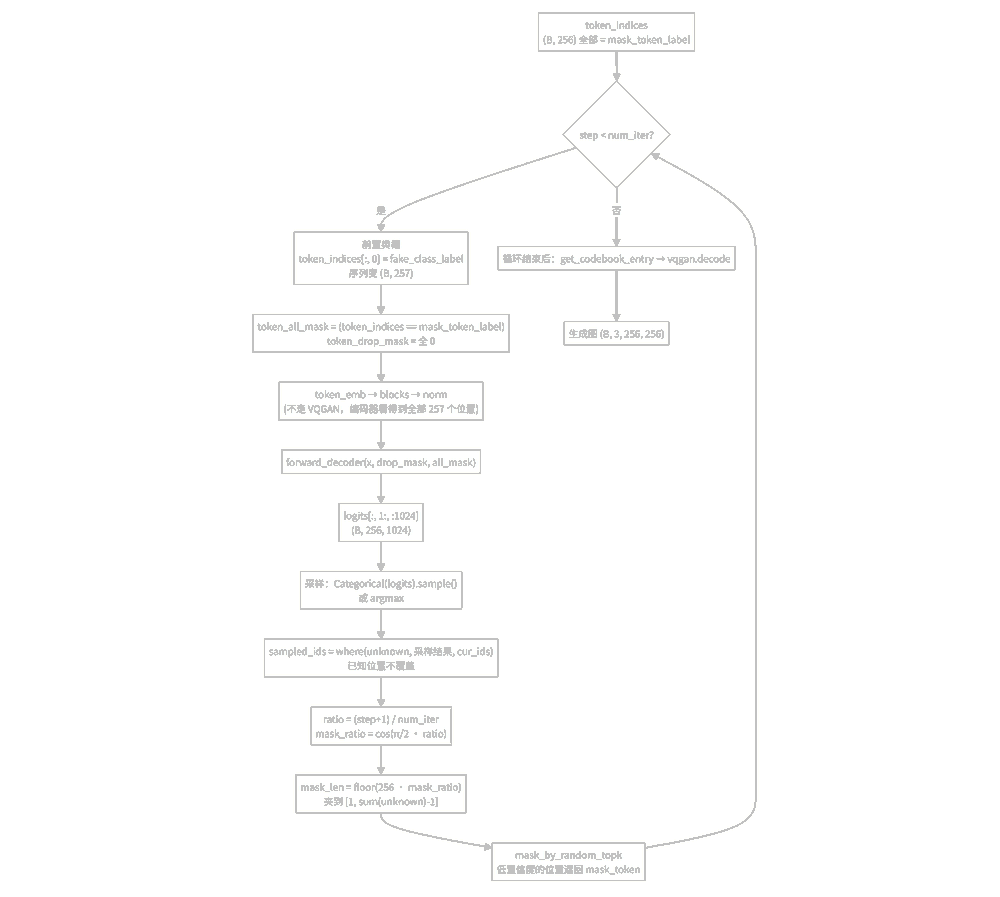
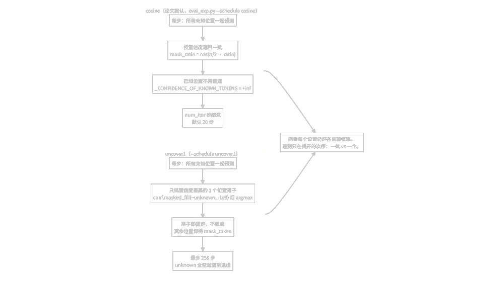
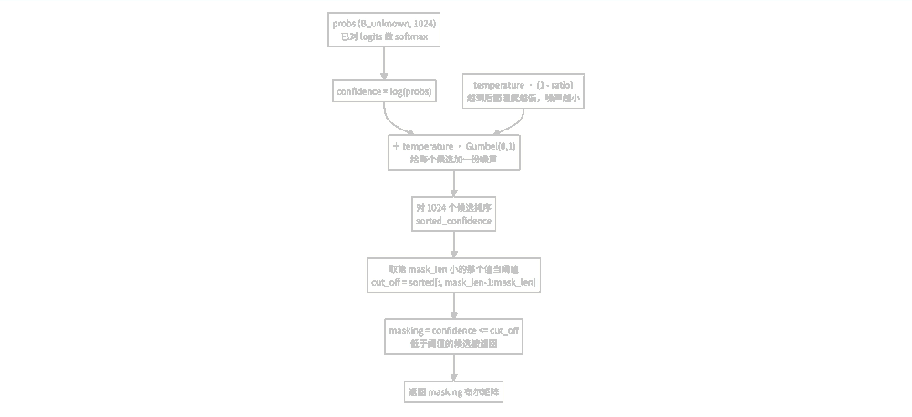
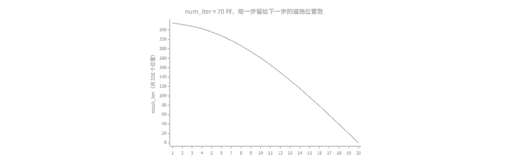
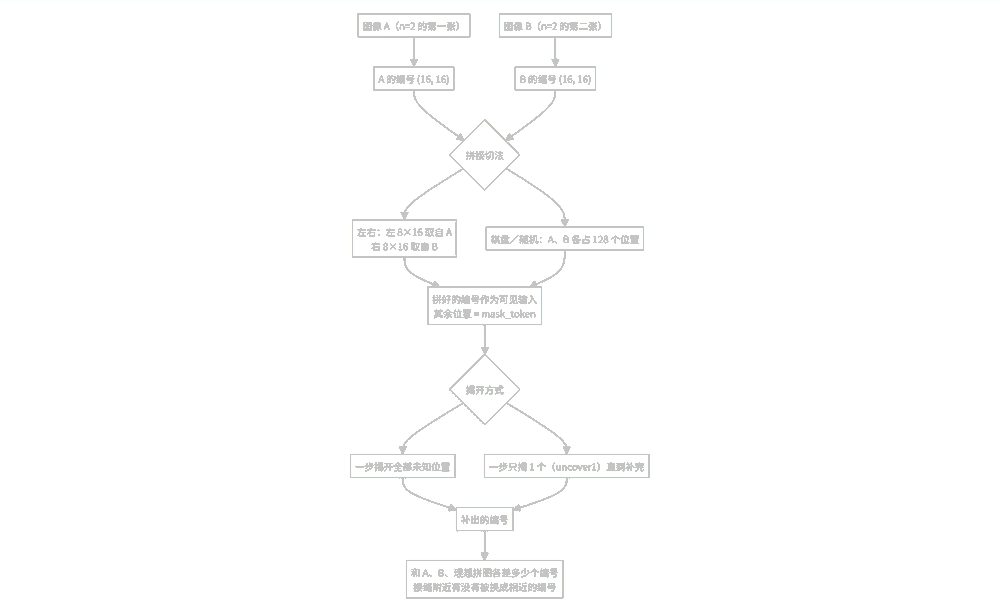
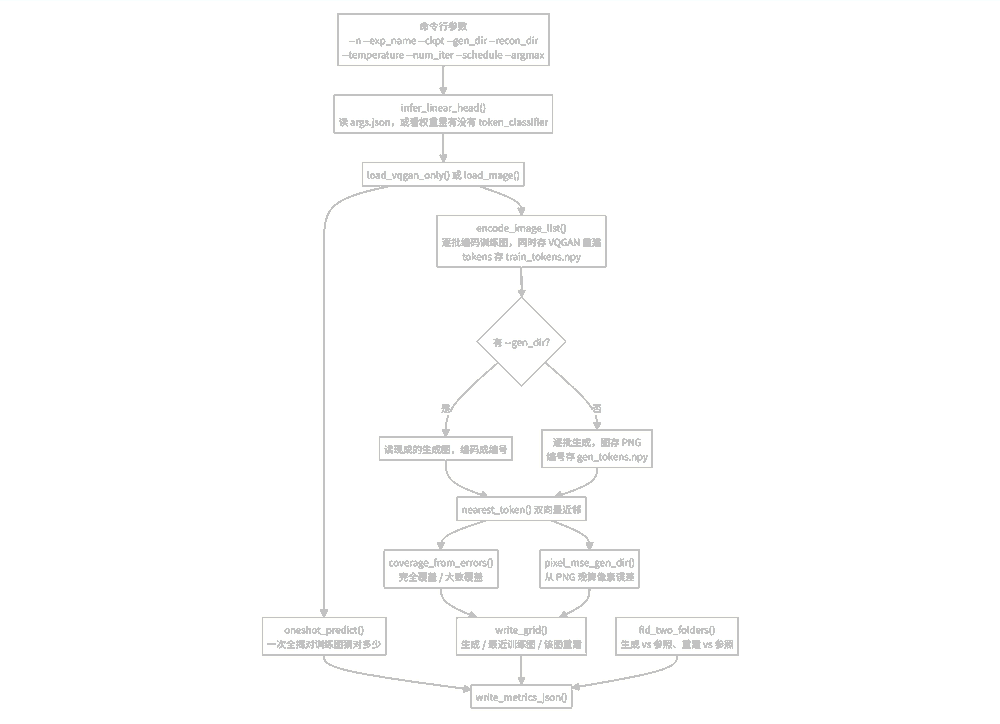

MAGE 源码逐读 · 第 2 篇 / 共 5 篇 · 生成与评测 MAGE
生成与评测代码文件：eval_exp.py 与 util/exp_*.py（从 mask_token 到 metrics.json） 仓库：LTH14/mage · 实验分支：001eander/MAGE_new | 生成日期：2026-09-29 | 半 A 半 B：16 × 16 的拼法 左 8×16 出自 A右 8×16 出自 B接缝两侧最容易被换成相近的编号A、B 固定为 n=2 的那两张图 |
系列 5 篇 · 进度 | 01主模型 models_mage.py已发出 | 02生成与评测 eval_exp.py本篇 | 03预训练引擎 engine_pretrain.py待写 | 04微调与线性探测 engine_finetune.py待写 | 05入口脚本 main_*.py待写 |
章目 · 15 节 | 08 | nearest_token：双向 Hamming 最近邻 |
| 12 | fid_two_folders：同一个函数算两种 FID |
代码保持原文换行，不加行号，避免与正文里的文件行号引用打架；超长行在代码块内部横向滚动，不做折行改写。 第 1 篇讲的是模型怎么把编号猜回来。这一篇讲另一半：怎么让它从「一个编号都看不见」开始，一步步把 256 个编号补出来，以及怎么把「生成得好不好」变成一组可以核对的数字。 两条线。生成线在 gen_img_uncond.py（论文的独立生成脚本）和 eval_exp.py 的 generate_batch 里；评测线在 util/exp_fid.py 和 util/exp_metrics.py 里。评测线要做的事，是把 README 第 2.2 节列的那四样——FID、覆盖率、平均匹配误差、图像质量——逐一落成文件。 全遮的 256 个位置→每步预测并揭一部分→编号→VQGAN 解码→图 ／ 同一批图→FID、覆盖率、匹配误差、拼图 这一篇和 README 三处直接对应：第 2.2 节的指标定义、第 4.3 节的半 A 半 B、第 4.5 节的量化误差。代码里每一个数字都能指回那几节的要求，反过来也一样。 先说明几个词 | 一次全揭（oneshot）：256 个位置全是 mask_token，模型只前向一次，取最大概率。这不是采样，是探测模型「一眼看全部」能猜对多少。 |
| 最近邻：编号空间里逐位比较，数有多少个位置不一样。256 维上的 Hamming 距离。 |
| 相对自己：拿模型对某张训练图的预测，和这张训练图自己的编号比。对应 README 第 2.2 节那栏「一次揭开全部遮挡时猜对了多少」。 |
| 参照集：算 FID 时当基准的那批图。Tiny 子上就用 Tiny 的验证集，放大到 256、和训练时同一套预处理。 |
| 注 | 这一篇只讲代码怎么组织，不放任何实验数字。本地没有 outputs/ 和 data/，跑在集群上；文里的图都是从代码逻辑和公式直接推出来的，不是结果截图。 |
同一个仓库里有两套采样循环。gen_img_uncond.py 是论文的独立生成脚本，界面就三个旋钮：温度、步数、生成多少张。eval_exp.py 里那一套多了一个开关，把「怎么揭」也变成参数。 if schedule == 'uncover1':
gen_iters = 256
gen_note = (
'uncover1: each step commits the most-confident unknown position; '
'committed ids stay visible (no remask). Token sample/argmax matches '
'--sample/--argmax. Not the paper cosine remask sampler.'
)
else:
gen_iters = args.num_iter这段注释把两种循环的区别写得很直白：uncover1 每一步只把最有把握的那一个位置定下来，定下来就不再改；论文那套是每一步按置信度遮回一批，已经猜对的位置也可能被重新盖住。  图 1 · cosine 采样器一次完整生成 值得留意的是编码器那一步。生成的时候没有任何位置被「丢掉」，token_drop_mask 是整个零张量，所以编码器看到的是类槽加上全部 256 个位置——没被遮的是真实编号，被遮的是 mask_token。这和第 1 篇里训练时的行为不一样：训练时编码器固定丢掉一半的位置，生成时一个都不丢。  图 2 · 两种采样器的差别只在揭开次序 敲黑板README 第 4.3 节专门写了一句：论文默认的 12 步生成会把已经猜对的位置再遮回去，那不是半 A 半 B 实验。--schedule uncover1 就是为这件事准备的开关，它不做重遮，所以「一步只揭一个」这条路线才做得干净。拿默认的 12 步生成去代替半 A 半 B，测到的会是重遮带来的抖动。 | 03 | mask_by_random_topkeval_exp.py 276–282 |
遮回哪些位置，由一个九行的函数决定。两个版本（gen_img_uncond.py 和 eval_exp.py）内容一致，只是设备写法不同。 | Python · mask_by_random_topk | 02 / 22 |
def mask_by_random_topk(mask_len, probs, temperature=1.0):
mask_len = mask_len.squeeze()
confidence = torch.log(probs) + torch.Tensor(
temperature * np.random.gumbel(size=probs.shape)).to(probs.device)
sorted_confidence, _ = torch.sort(confidence, axis=-1)
cut_off = sorted_confidence[:, mask_len.long() - 1:mask_len.long()]
return confidence <= cut_off | 第 2 行 log(probs) 把概率换成对数概率。概率越低的候选，对数越负，排到后面越容易被遮。 |
| 第 3–4 行加上 Gumbel 噪声。这一步是「随机」的来源：不加噪声，被遮的永远是最没把握的那些，采样会退化成贪心；加了噪声，排在第 mask_len 名附近的候选每次抽到的顺序都不一样。 |
| 第 5–6 行不排序后逐位取，而是先排序、取第 mask_len 小的值当阈值，再拿阈值去筛。这样输出是一个布尔矩阵，形状和输入一致，不会因为并列值多选出或少选出几个。 |
| 噪声幅度由调用方给：temperature * (1 - ratio)。越接近结束，温度越低，噪声越小，最后几步基本按置信度落子。 |
 图 3 · mask_by_random_topk：先加噪再取阈值 这个函数在 gen_img_uncond.py 里用 .cuda() 写死了设备，在 eval_exp.py 里改成了 .to(probs.device)。后者才能在 CPU 上跑通——测试或冒烟脚本会用到。 | 04 | 循环体逐步拆解eval_exp.py 285–324 |
把 generate_batch 的循环体按执行顺序摊开，一共六件事。 for step in range(num_iter):
cur_ids = token_indices.clone().long()
logits = mage_codebook_logits(model, cur_ids)
if argmax:
sampled_ids = torch.argmax(logits, dim=-1)
else:
sampled_ids = torch.distributions.categorical.Categorical(
logits=logits).sample()
unknown_map = (cur_ids == mask_token_id)
sampled_ids = torch.where(unknown_map, sampled_ids, cur_ids)
ratio = 1.0 * (step + 1) / num_iter
mask_ratio = np.cos(math.pi / 2.0 * ratio)| 01 | cur_ids 存一份本轮开始时的编号。后面用它算 unknown_map，也就是「这一步之前还看不见的位置」。 |
| 02 | mage_codebook_logits 把当前编号补上类槽、算 token_all_mask，走一遍编码器和解码器，返回 (B, 256, 1024)。注意这里只截前 1024 类，类别编号和 mask 编号的 logits 全丢掉。 |
| 03 | 取编号的方式由 --argmax 决定：argmax 是每步取最大概率，Categorical(...).sample() 是按概率随机抽。README 第 2.2 节要求把「取最大概率还是随机采样」写进 metrics.json，对应的就是这一行。 |
| 04 | torch.where(unknown_map, sampled_ids, cur_ids) 保证已经知道的位置不被新预测覆盖。这一句让「已知」变成单向的。 |
| 05 | ratio 从 1/num_iter 走到 1，mask_ratio 是它的余弦。这是论文的调度：开头几乎全遮，结尾几乎全揭。 |
 图 4 · mask_len = floor(256 · cos(π/2 · (step+1)/num_iter)) mask_len 的两道夹取mask_len = torch.tensor(
[np.floor(unknown_number_in_the_beginning * mask_ratio)],
device=device)
mask_len = torch.maximum(
torch.tensor([1.0], device=device),
torch.minimum(torch.sum(unknown_map, dim=-1, keepdims=True) - 1, mask_len)) | 基数是 unknown_number_in_the_beginning，写死的 256，不是当前还剩多少未知。所以调度曲线不受中途状态影响，每一步留多少完全由步数决定。 |
| 上限是 sum(unknown) - 1：这一步至少得揭掉一个位置，否则循环可能原地打转。 |
| 下限是 1：至少留一个位置给下一步。所以最后一步之后，循环退出时的 sampled_ids 才是完整结果。 |
| 注 | token_indices 每轮都在被遮回和揭开的反复中变化，但最终拿去解码的是 sampled_ids——那个没被重新遮过的版本。两行代码差一个字，含义完全不同。
|
| 05 | uncover1：一步只揭一个eval_exp.py 327–359 |
这个循环短，但把「不重遮」这件事做到了底。 | Python · uncover1：一步只揭一个 | 05 / 22 |
for step in range(256):
unknown = token_indices == mask_token_id
if not bool(unknown.any()):
break
logits = mage_codebook_logits(model, token_indices)
pred = torch.distributions.categorical.Categorical(logits=logits).sample()
probs = torch.nn.functional.softmax(logits, dim=-1)
conf = torch.gather(probs, dim=-1, index=pred.unsqueeze(-1)).squeeze(-1)
conf = conf.masked_fill(~unknown, -1.0e9)
pick = conf.argmax(dim=-1)
token_indices = token_indices.clone()
token_indices[batch_idx, pick] = pred[batch_idx, pick] | 第 2 行每轮重新算一次 unknown，第 3–4 行在未知清空时提前退出，所以 256 只是上界，实际步数等于需要填的位置数。 |
| conf 取出被选中编号的概率，是「这一步有多有把握」的度量。 |
| masked_fill(~unknown, -1e9) 把已经揭开的那些位置压到负无穷，argmax 就只能在未知位置里挑。这一句替代了排序，是两种采样器在实现上最直观的分野。 |
| 落子写回的是 pred[batch_idx, pick]，也就是那一步真正抽到的编号，而不是最大概率的编号——--sample 和 --argmax 的区别在这里同样生效。 |
 图 5 · 半 A 半 B 的两种切法与两种揭法 第 4.3 节的两种揭法就是这两种循环。uncover1 让「补出来的编号更像 A 还是比较像 B」这个问题变得可以观察：一步一个位置地走，接缝附近如果发生替换，能看出是哪一步换的。默认的 cosine 循环一次揭一批，接缝的信息混在一整批里，看不出来。 | 06 | oneshot：一次全揭只对答案eval_exp.py 237–255 |
README 第 2.2 节要求单独报一栏「一次揭开全部遮挡时，对训练图猜对了多少编号」。这个函数就是那一栏。 | Python · oneshot：一次全揭只对答案 | 06 / 22 |
def oneshot_predict(model, images):
"""All positions masked, nothing dropped, argmax over codebook."""
bsz = images.size(0)
mask_id = model.mask_token_label
token_indices = mask_id * torch.ones(bsz, 256, device=device)
token_indices = torch.cat(
[torch.zeros(bsz, 1, device=device), token_indices], dim=1)
token_indices[:, 0] = model.fake_class_label
token_all_mask = torch.ones_like(token_indices, dtype=torch.float32)
token_all_mask[:, 0] = 0
token_drop_mask = torch.zeros_like(token_indices, dtype=torch.float32)
logits = model.forward_decoder(x, token_drop_mask, token_all_mask)
return logits[:, 1:, :model.codebook_size].argmax(dim=-1) | 输入不是编号，是图像张量。函数里不用它们做条件，只借 images.size(0) 拿批量大小——模型是无条件的，生成时确实不依赖任何输入图。 |
| token_all_mask 全 1、类槽位设 0，token_drop_mask 全 0。编码器看到类槽加 256 个 mask 编号。 |
| 返回 argmax 而不是采样。这里要的是「模型最看好哪个」，不是「抽一个看看」。 |
| 调用方 eval_exp.py 拿它和 encode_tokens(vqgan, batch) 比，逐位算准确率。所以这一栏测的是相对自己，和最近邻那一栏不是一回事。 |
大 n 时探针集会被裁剪| Python · oneshot：一次全揭只对答案 | 07 / 22 |
probe_file = args.probe_list or os.path.join(splits_dir, 'probe.txt')
if os.path.isfile(probe_file) and args.n >= 1000:
probe_rel = [p for p in read_list(probe_file) if p in set(rel_paths)]
else:
probe_rel = list(rel_paths)splits/probe.txt 是固定的 8 张：A、B，加 n=10 里接下来的 6 张。n 小的时候直接用全部训练图；n 到 1000 以上，训练集太大，就用这 8 张固定探针。if p in set(rel_paths) 这一步保证探针里的图确实在这个 n 的子集里——子集是嵌套的，所以不会漏。
| 07 | exp_data.py：冻结的子集与默认值util/exp_data.py 全文 |
这个模块只有 145 行，但实验里所有「固定住不让动」的东西都在这里。 | Python · exp_data.py：冻结的子集与默认值 | 08 / 22 |
N_VALUES = (1, 2, 10, 100, 1000, 10000)
SPLIT_SEED = 0
IMAGE_A = 'train/n01443537/images/n01443537_0.JPEG'
IMAGE_B = 'train/n01629819/images/n01629819_0.JPEG'
SOURCE_NATIVE_SIZE = 64
TRAIN_EVAL_SIZE = 256
FID_COMPARABLE_TO_PAPER = False
DEFAULT_TEMPERATURE = 6.0
DEFAULT_NUM_ITER = 20
DEFAULT_ARGMAX = False
DEFAULT_GEN_SEED = 0
APPROX_COVER_MAX_ERRORS = 16
GRID_N = 8 | A 和 B 是写死的两个路径，对应 manifest.json 里的金鱼和蝾螈。n=2 的两张就是它们，半 A 半 B 的 A、B 也是它们。README 第 2.1 节要求「n=2 的两张固定为半 A 半 B 的 A、B，不要另找两张」——用一个常量把这件事钉死。 |
| FID_COMPARABLE_TO_PAPER = False 是 README 那句警告的代码版本：Tiny 原图 64×64，放大到 256 之后算出来的 FID 不能和论文的 ImageNet-256 数字比。它会被写进 metrics.json 的 source 字段，跟着结果一起走。 |
| DEFAULT_TEMPERATURE = 6.0、DEFAULT_NUM_ITER = 20——注意这和 gen_img_uncond.py 里写死的 4.5 / 12 不一样。后者是论文脚本原本的默认值，这里用的是 README.official.md 里类无条件生成那条命令的参数。 |
| APPROX_COVER_MAX_ERRORS = 16 就是 README 说的 6.25%（16/256），「大致覆盖」的阈值。 |
两个数据集类，都不带标签| Python · exp_data.py：冻结的子集与默认值 | 09 / 22 |
class ImageListDataset(Dataset):
"""RGB images from a frozen relative-path list. Label is unused (always 0)."""
def __getitem__(self, index):
img = Image.open(self.paths[index]).convert('RGB')
if self.transform is not None:
img = self.transform(img)
return img, 0
class TokenIndexDataset(Dataset):
"""Precomputed VQGAN codebook ids [N, 256]. Label unused (always 0)."""两个类都返回 (数据, 0)。ImageListDataset 在构造时就把缺失的图检查掉，缺一张就报错并给出第一条缺失路径，而不是等训练跑到一半才炸。生成和评测都是无条件任务，标签确实没用，写个 0 是为了兼容 DataLoader 的接口。 | Python · exp_data.py：冻结的子集与默认值 | 10 / 22 |
def default_num_images(n):
n = int(n)
if n >= 10000:
return 50000
return max(1000, 50 * n)生成张数的规则。n=1、2、10 都是 1000 张，n=100 是 5000 张，n=1000 和 10000 是 50000 张。和 manifest.json 里那张表逐项对应。小 n 之所以要 1000 张而不是 50 张，是因为 FID 的协方差估计需要足够的样本，生成张数太少这个数字本身就不稳。 | 08 | nearest_token：双向 Hamming 最近邻util/exp_metrics.py 34–63 |
覆盖率和匹配误差是同一个操作的两个方向。这个函数被调用两次，参数顺序一换，含义就变了。 | Python · nearest_token：双向 Hamming 最近邻 | 11 / 22 |
for qi in range(0, nq, q_batch):
q = query[qi:qi + q_batch]
local_min = np.full(len(q), 256, dtype=np.int32)
for gi in range(0, gallery.shape[0], g_batch):
g = gallery[gi:gi + g_batch]
err = (q[:, None, :] != g[None, :, :]).sum(axis=-1)
idx = err.argmin(axis=1)
val = err[np.arange(len(q)), idx]
better = val < local_min
local_min[better] = val[better]
local_nn[better] = idx[better] + gi | (q[:, None, :] != g[None, :, :]).sum(-1) 一次算出一整块距离矩阵：形状 (q_batch, g_batch, 256)，逐位不等再沿最后一维求和，就是 256 维的 Hamming 距离。 |
| 两层分块，q_batch=32、g_batch=4096。50000 张生成图对 50000 张训练图是 25 亿对，不分块的话那个中间张量直接把显存或内存撑爆。 |
| local_nn[better] = idx[better] + gi 里的 + gi 容易漏。idx 是块内下标，加回块偏移才是全局下标。 |
| min_err 初始值 256，正好是最大可能的错位数，所以任何真实距离都会覆盖它；一张都对不上的图会留下 256 这个值。 |
 图 6 · eval_exp.py 的主流程 | Python · nearest_token：双向 Hamming 最近邻 | 12 / 22 |
train_to_gen_err, _ = nearest_token(train_tokens, gen_tokens)
gen_to_train_err, gen_nn = nearest_token(gen_tokens, train_tokens) 两行方向相反。第一行问「每张训练图在生成结果里能不能被找到」——对应覆盖率。第二行问「每张生成图离最近的训练图有多远」，顺便把最近邻下标 gen_nn 留下来给拼图用。 | 注 | 第二行在 50000 张生成图上会跑很久，但它只做一次，结果被后面三处共用：匹配误差、覆盖率反查、拼图取图。 |
| 09 | 覆盖率与匹配误差的定义util/exp_metrics.py 66–82、144–148 |
| Python · 覆盖率与匹配误差的定义 | 13 / 22 |
def coverage_from_errors(train_to_gen_errors, approx_max=APPROX_COVER_MAX_ERRORS):
err = np.asarray(train_to_gen_errors)
n = max(int(err.size), 1)
return {
'exact': float((err == 0).sum()) / n,
'approx': float((err <= approx_max).sum()) / n,
'approx_token_errors_max': int(approx_max),
'n_train': int(err.size),
}两个比例。exact 是完全覆盖：在生成集合里有某一张，256 个编号一个不差。小 n 上这个数可能非零，大 n 上接近 0。approx 放宽到最多错 16 个位置，README 说这是 6.25%。n 取 max(size, 1) 是为了空输入不除以零。 | Python · 覆盖率与匹配误差的定义 | 14 / 22 |
def token_match_frac(gen_to_train_errors):
err = np.asarray(gen_to_train_errors, dtype=np.float64)
if err.size == 0:
return 0.0
return float((err / 256.0).mean())
def pixel_mse_uint8(a, b):
return float(np.mean((a - b) ** 2) / (255.0 ** 2)) | token_match_frac 是编号口径的匹配误差：先除以 256 换成比例，再对所有生成图取平均。分母写死 256，因为编号图固定 16×16。 |
| pixel_mse_uint8 除以 255²，把均方误差归一化到 [0, 1]。两处都写死归一化因子，是为了不同批次的数字能直接比较。 |
| 像素口径比的是两张 VQGAN 解码图，不是原始 JPEG。README 那句「不要拿未量化的 JPEG 来比」，在代码里的体现就是 train_recons 这个变量——训练图先编码再解码的结果，才拿去算误差。 |
| 10 | 猜错的编号离正确答案有多远util/exp_metrics.py 96–141 |
第 4.1 和 4.2 节要验证的说法是：点积分类头加标签平滑时，模型学的不是「这个位置必须是编号 y」，而是「隐向量靠近 y 附近的一簇词向量」。验证方式是量一量猜错的那些编号，在词向量空间里离正确答案有多近。 | Python · 猜错的编号离正确答案有多远 | 15 / 22 |
pred_e = emb[pred[wrong]]
gt_e = emb[gt[wrong]]
out['wrong_cosine_distance'] = float(_pairwise_cosine_distance(pred_e, gt_e).mean())
out['wrong_euclidean'] = float(_pairwise_euclidean(pred_e, gt_e).mean())
rng = np.random.RandomState(seed)
rand = rng.randint(0, vocab_size, size=n_wrong)
collide = rand == gt[wrong]
rand[collide] = (rand[collide] + 1) % vocab_size | emb 传进来的是 model.token_emb.word_embeddings.weight，只取前 1024 行（codebook 那部分）。用的是词嵌入本身，而不是解码器输出的隐向量——因为「相近」的定义就建立在这张表上。 |
| 两个距离各报一个：余弦距离看方向，欧氏距离看绝对位置。词向量没有归一化，两个数的含义确实不同。 |
| 随机基线不是「随便取一个编号」，而是逐条重新抽一个不等于正确答案的编号。collide 那两行处理抽中正确答案的情况，把它挪到下一个编号，保证基线里没有正确答案。 |
| 有了这个基线，「猜错的编号比随机猜错更接近正确答案」才有意义。只报绝对距离，读者没法判断这个距离算近还是算远。 |
| 注 | n_wrong == 0 时函数直接返回，所有距离留 None，并把 note 改成「no wrong tokens; distances undefined」。小 n 上模型把图全背下来时，这里会真的出现全对的情况。
|
| 11 | 拼图：三列各自是什么util/exp_metrics.py 166–197 |
README 第 2.2 节要求每个 n、每种设置留一张固定拼图，至少 8 张生成图，加各自的最近训练图，加那张训练图的 VQGAN 重建。 | Python · 拼图：三列各自是什么 | 16 / 22 |
for i in range(n_show):
j = int(nn_index[i]) if i < len(nn_index) else 0
g = to_uint8_image(gen_images[i])
t = to_uint8_image(train_images[j])
r = to_uint8_image(train_recons[j])
panels.append((g, t, r))
labels.append(('gen {}'.format(i), 'train {}'.format(j), 'vqgan {}'.format(j))) | 第 2 行 j = nn_index[i] 用的就是 nearest_token 返回的最近邻下标。所以第一列第 i 行和第二列第 j 行是编号空间里真正最近的一对，不是随便配的。 |
| 第三列是第二列那张训练图的重建。它和第一列长得像不像，能直接看出生成图离量化上限还有多远。 |
| labels 写成 gen 0 / train 7 / vqgan 7 这种形式，下标能对上。看拼图的人不用去翻 json 就知道哪张对应哪张。 |
图 7 · 双向最近邻：一个算覆盖率，一个算匹配误差 每行上方留 22px 画标签条，画布先铺白底再贴三张图。行数取 min(GRID_N, 生成图数, 最近邻数)——生成图少于 8 张时不会留出空行。 敲黑板README 那句「不要只留最好看的一张」在代码里对应的是：拼图取的是前 8 张生成图（gen_preview 里按生成顺序攒的前 8 张），不是按质量挑的。这是刻意的——如果按分数挑，拼图就失去诊断价值了。 | 12 | fid_two_folders：同一个函数算两种 FIDutil/exp_fid.py 全文 |
第 4.5 节要求：每个报 FID 的设置，三个数字写在一起。代码层面这件事的落点是——生成 FID 和重建 FID 走的是同一个函数。 | Python · fid_two_folders：同一个函数算两种 FID | 17 / 22 |
def fid_two_folders(dir_a, dir_b, device, batch_size=FID_BATCH_SIZE, num_workers=1,
extractor=None, dims=FID_DIMS):
"""Same function for generated-vs-ref and VQGAN-recon-vs-ref."""
if extractor is None:
extractor = build_inception(device, dims)
fa = features_from_folder(dir_a, device, batch_size, num_workers, extractor, dims)
fb = features_from_folder(dir_b, device, batch_size, num_workers, extractor, dims)
mu1, s1 = stats_from_features(fa)
mu2, s2 = stats_from_features(fb)
return frechet_distance(mu1, s1, mu2, s2) | 两个文件夹各自抽特征，各算均值和协方差，再算 Fréchet 距离。调用方只要换参数顺序，就能算「生成 vs 参照」或「重建 vs 参照」。 |
| dims=2048 对应 InceptionV3.BLOCK_INDEX_BY_DIM 里pool3 那一层，batch_size=50 和 LGANs-TT realdata.py 里的默认值一致。implementation 这个字符串会被原样写进 metrics.json，说明这个数字是谁算的。 |
| batch_size > len(files) 时会先降到文件数，避免小参照集上 DataLoader 报错。 |
| Python · fid_two_folders：同一个函数算两种 FID | 18 / 22 |
covmean, _ = linalg.sqrtm(sigma1.dot(sigma2), disp=False)
if not np.isfinite(covmean).all():
offset = np.eye(sigma1.shape[0]) * eps
covmean = linalg.sqrtm((sigma1 + offset).dot(sigma2 + offset))
if np.iscomplexobj(covmean):
if not np.allclose(np.diagonal(covmean).imag, 0, atol=1e-3):
raise ValueError('Imaginary component {}'.format(np.max(np.abs(covmean.imag))))
covmean = covmean.real矩阵平方根那一段是 FID 实现里最容易出问题的地方。协方差矩阵可能接近奇异，sqrtm 会返回非有限值或者复数。这里先加一个 1e-6 的对角扰动重算，再把虚部检查一遍——虚部真的超过了 1e-3 才报错，否则只取实部。这套兜底和 pytorch-fid 上游一致。 | 13 | metrics.json 的模式与校验util/exp_metrics.py 18–31、280–297 |
所有评测的出口都是同一个 json。写之前先校验，缺字段直接抛异常。 | Python · metrics.json 的模式与校验 | 19 / 22 |
REQUIRED_METRIC_KEYS = (
'n', 'exp_name', 'image_list', 'A', 'B', 'source',
'generation', 'fid', 'coverage', 'match_error', 'oneshot_vs_self', 'grid',
)
def write_metrics_json(metrics, path):
missing = [k for k in REQUIRED_METRIC_KEYS if k not in metrics]
if missing:
raise ValueError('metrics.json missing keys: {}'.format(missing))
gen = metrics['generation']
for k in ('temperature', 'num_iter', 'argmax', 'num_images'):
if k not in gen:
raise ValueError('generation missing {}'.format(k))
fid = metrics['fid']
if 'generated_vs_ref' not in fid or 'vqgan_recon_vs_ref' not in fid:
raise ValueError('fid must include generated_vs_ref and vqgan_recon_vs_ref') | 三段校验对着三条 README 要求：指标不能缺（第 2.2 节那张表）、采样参数必须写下来（温度、步数、取最大概率还是采样、生成张数）、两个 FID 必须同时存在（第 4.5 节）。 |
| 校验放在写入之前，所以不完整的评测结果落不了盘。跑完一个 n 拿不到 json，就说明哪一项没算。 |
实际写进去的结构| Python · metrics.json 的模式与校验 | 20 / 22 |
metrics = {
'n': int(n),
'exp_name': exp_name,
'image_list': image_list,
'n_train': len(train_rel_paths),
'train_paths': list(train_rel_paths),
'A': IMAGE_A,
'B': IMAGE_B if int(n) >= 2 else None,
'source': source_info(),
'generation': {...},
'fid': {...},
'coverage': coverage,
'match_error': match_error,
'oneshot_vs_self': oneshot_vs_self,
'wrong_token_embed': wrong_token_embed,
'grid': grid_path,
} | 'B': IMAGE_B if int(n) >= 2 else None——n=1 时没有第二张图，字段留 None 而不是编一个路径。 |
| 'tokens_exact_equals_vqgan_recon': True 写在 fid 段里，把第 4.5 节第 (2) 档那个论断固定成一条断言：编号全对时，像素结果就是重建图，FID 等于重建 FID。 |
| generation 段还有 schedule、uncover_per_step、remask 三个字段，把「用的哪个采样器」也钉住。repeats_allowed: True 说明生成张数里允许有重复。 |
| 调用方还会塞两个额外字段：setting（这属于四种组合里的哪一种）和 profile（编码、生成、覆盖率、FID 各花了多少秒）。后者在做时间估算时有用。 |
| 14 | 内存纪律：五万张图怎么办eval_exp.py 216–234、381–421 |
n=1000 和 n=10000 要生成 50000 张图。把 50000 张 256×256 的浮点张量放在内存里是 50000×3×256×256×4 字节，接近 40 GB。代码里到处都在绕开这件事。 | reconstruct_folder 的 docstring 直接写着 Do not load the whole folder.，逐批编码解码，图直接写盘，不留在内存。 |
| encode_image_list 也一样，只把编号数组攒下来（int 类型，50000×256 才 12 MB 出头），重建图写进 train_vqgan_recon/ 目录。 |
| 算像素误差时，pixel_mse_gen_dir 是从 PNG 现读的：读一张算一张，算完就丢。所以它能在 50000 张上跑完而不爆内存。 |
| 拼图只取前 8 张：生成过程中用 gen_preview 攒着，到 8 张就停止追加。剩下的图只在盘上，不进内存。 |
| Python · 内存纪律：五万张图怎么办 | 21 / 22 |
def pixel_mse_gen_dir(gen_dir, n_gen, train_recons, gen_nn):
"""Match-error pixels from saved PNGs so 50k gens stay off the heap."""
mses = []
for i in range(int(n_gen)):
arr = np.array(Image.open(gen_png_path(gen_dir, i)).convert('RGB'))
mses.append(pixel_mse_uint8(arr, train_recons[int(gen_nn[i])]))train_recons 留在内存里是因为它最多只有训练集的规模。n=10000 时是 10000 张 256×256×3 的 uint8，约 2 GB，比生成那 50000 张小一个数量级。用一个可接受的常驻量换掉逐张读盘的开销。
共享重建 FID 的缓存| Python · 内存纪律：五万张图怎么办 | 22 / 22 |
def cached_shared_recon_fid(recon_dir):
"""Reuse outputs/_ref/metrics.json when eval points at the shared recon dir."""
shared = os.path.normpath('outputs/_ref/tiny_val256_vqgan_recon')
if os.path.normpath(recon_dir) != shared:
return None
value = (metrics.get('fid') or {}).get('vqgan_recon_vs_ref')重建 FID 只取决于参照集和 VQGAN 权重，和 n、和训练出来的模型都无关。所以哪怕只计算一次，结果对每个 n 都成立。这里用路径比对来判断「你指向的是不是那个共享目录」，是的话就直接读现成的数字，不再跑一遍 Inception。路径用 os.path.normpath 归一化过，写成 outputs/_ref/... 还是 ./outputs/_ref/... 都能命中。 | 01 | 生成时有两套采样循环。cosine 按置信度批量遮回，uncover1 一步只定一个位置且不重遮。第 4.3 节的半 A 半 B 用后者，论文默认的 12 步生成不能替代。 |
| 02 | mask_len 的基数是写死的 256，不是当前未知数；上下界保证每步至少揭一个、至少留一个。 |
| 03 | mask_by_random_topk 的随机性来自 Gumbel 噪声，温度随进度衰减，最后几步接近按置信度落子。 |
| 04 | 覆盖率和匹配误差是同一套 Hamming 最近邻的两个方向：train→gen 算覆盖率，gen→train 算匹配误差并留下拼图要用的下标。 |
| 05 | 「相对自己」那一栏由 oneshot_predict 提供，全遮一次前向取最大概率，和最近邻是两件事，分开报。 |
| 06 | 两个 FID 必须并排：重建 vs 参照是量化上限，生成 vs 参照减掉它，剩下的才是模型和采样带来的误差。 |
| 07 | metrics.json 写之前先校验，采样参数和两个 FID 缺一个就落不了盘。 |
| 08 | 50000 张图靠「不整目录读进内存」撑住：重建逐批写盘、像素误差从 PNG 现读、拼图只留前 8 张。 |
|